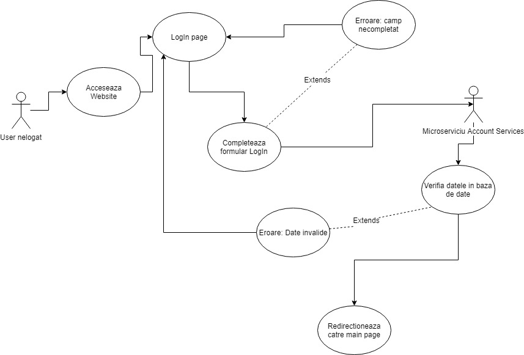
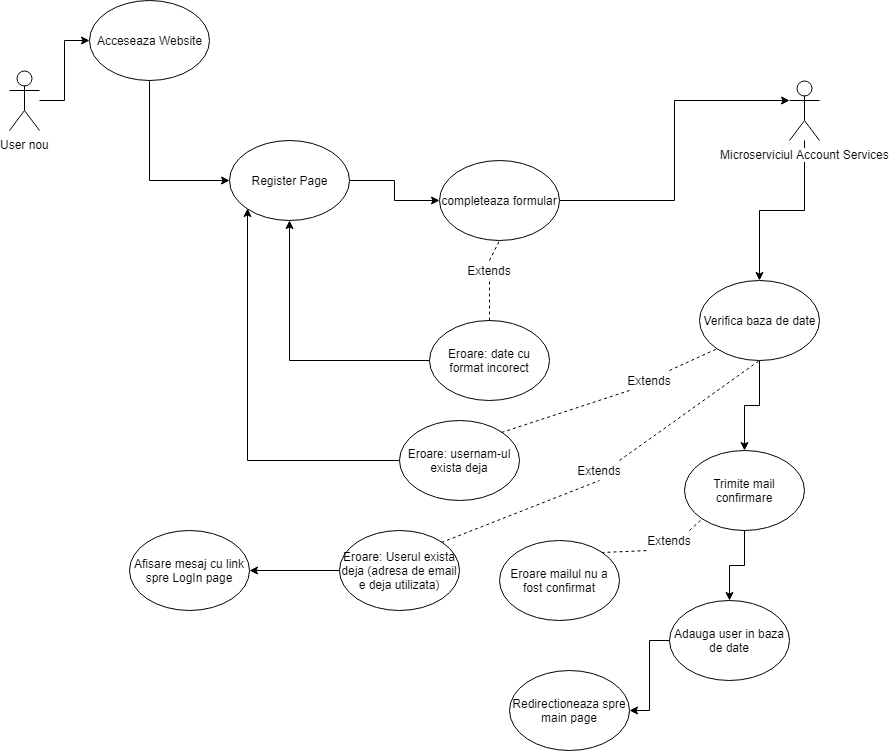
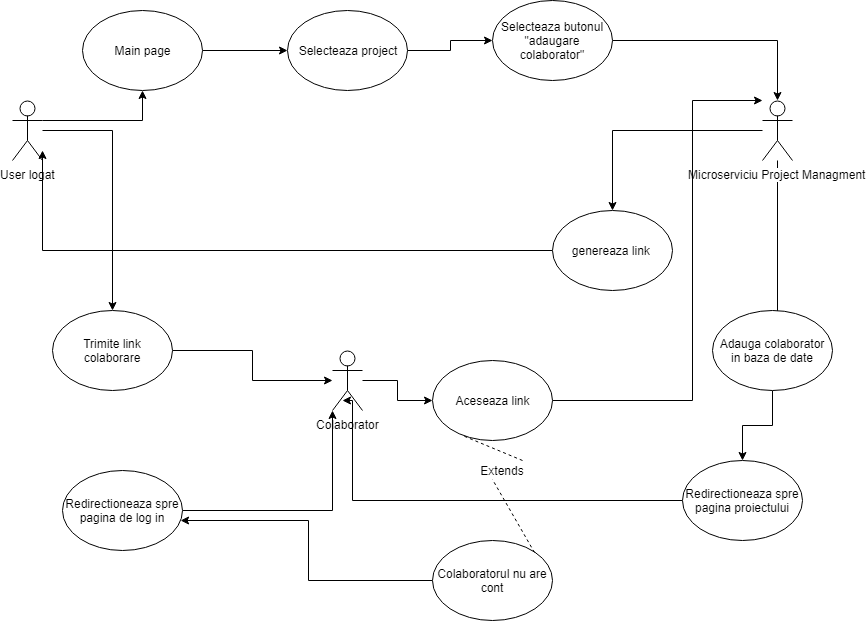
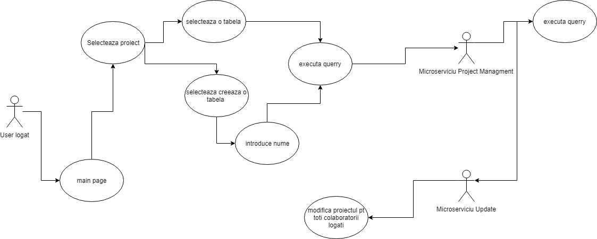
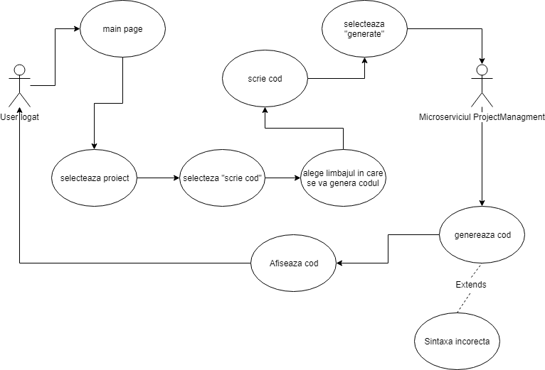
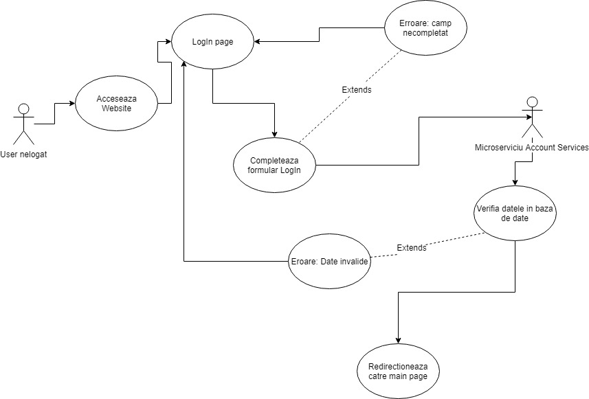
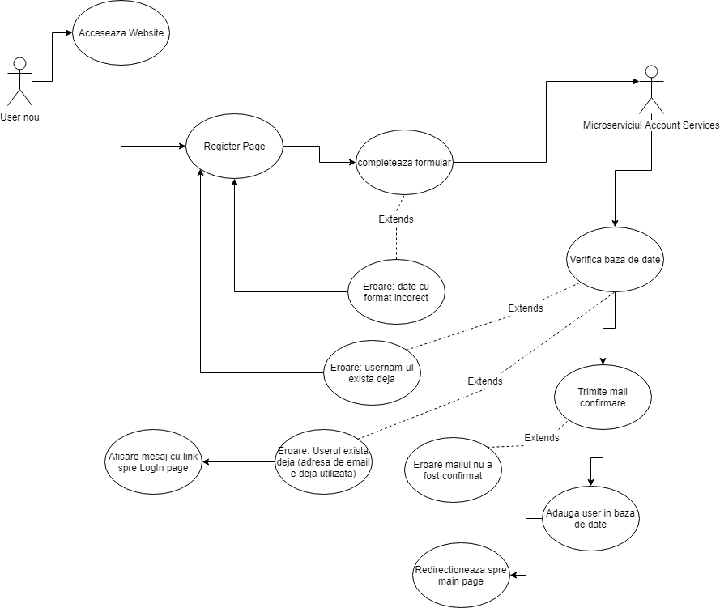
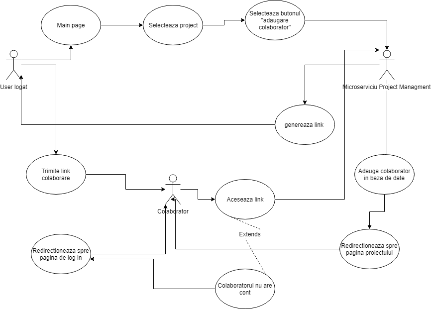
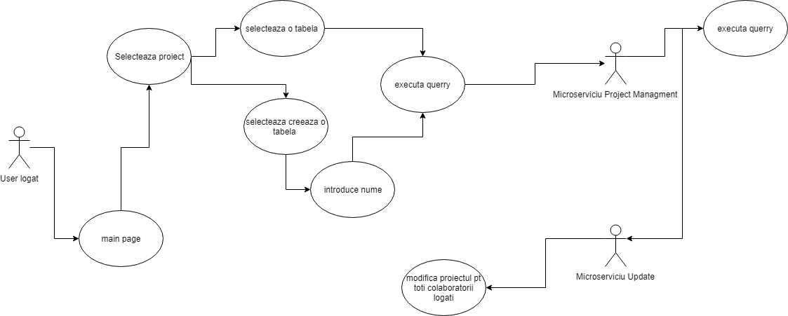
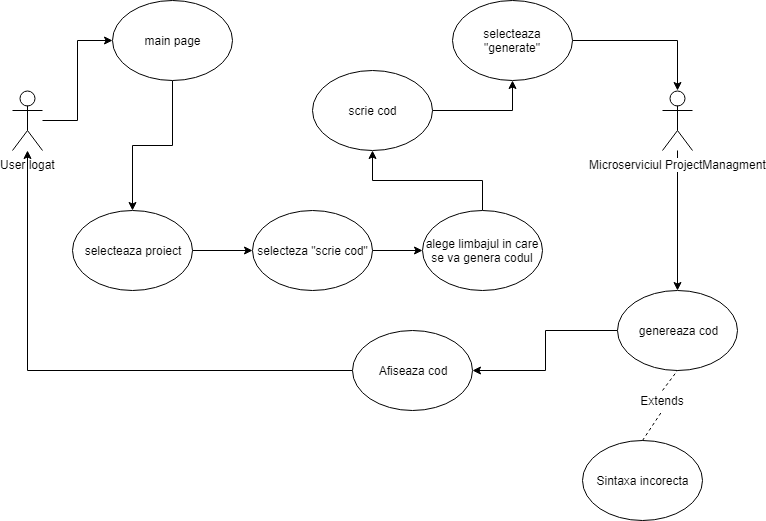

The main tehnology used in the development of this application is NodeJS. We also used MySQL databases.
NodeJs modules used:
Jsonwebtoken
mysql
nodemailer
bcrypt
body-parser
Application structure:
The application is divaded in 3 services: one for the users management(login,register,forget password), one for managing the projects for each user and one that takes care of the cooperative part of the applivation - ending the updates.
User Management Service
This service makes sure user can register and log into our website.
Endpoints:
./register
This endpoint requires a POST request to the server. The data from the registration form will be send to the server in a request body. After receiving the data, the server will add them into a database. The password willbe hashed using the bcrypt module. The account won't be active untill the user verifies the email adress. Using the email specified at registration, the server will send a random string via email, using nodemailer
/register-valdate
POST request to the server, sending a string via request body. It the string is correct, the account will be activated(=the column 'status' from the databese will pe updated to the value '1').
/login
POST request to the server, sending the credentials via request body. Verifies if the data that was sent exists in the users db.If the login is succesfull, the server will generate and return a jsonwebtoken, that we will store on a localstorage.
/changePAssword
POST request to the server, sending an email adress via request body. The server verifies if the email adress is a valide one and if it is it sends a mail with a code.
/changePasswordValidate
POST request to the server, sending the code and then the new password via request body. The server verifies the code and if it is okay, it updates the passwords. Return a true/false response
Project managemnt service
Endpoints:
/projects
GET request that receives a jsonweb token via authorization header, verifies if it is valide and if it is, it will get the user id from the jwt and will return all the projecs this user is a collab of. The response will be a list PRoject jsons .
/projets/project_id
GET regiest that takes a jwt via authorization header and verifies if it id valide. If it is, than return the description of the project with tha id from the url. The response will be a json containing the collabs of the project.
/projects?project_name=?username=?&password=?
POST request, that takes and verifies the jwt. Than the server will add to the projects tabel, a new project with the details from the url.
/projects/colabs?project_id=&user_id=
POST request that takes and verifies a hwt. Than, the server will a add a new entry in the collaborators tabel with the details from the url.
/projects/colabs?project_id=&user_id=
DELETE request that takes and verifies a jwt. Than, deletes from the project tabel the entry with the details from the url.
/isColab?project_id=&user_id=
GET request that takes and verifies a jwt. Than, verifies if in the collaborators tabel, exists an entry withe the details from the url. It returns a true/false respons via json.
/projects/query?project_id=&query=
POST request, that takes and verifies a jwt. Than, on the database specified in the url, will execute the mysql query from the url. The response will be the result of the query via json.
/generateCode/PHP?project_id=&query=? or /generateCode/Java?project_id=&query=?
POST request that takes and verifies a jwt. Than, gets the query from the url and converts it in php/java code depindig on the url. The response will be a json containing the genarated code.
/projects?project_id=
DELETE request that takes and verifies a jwt. Than, deletes from the projects tabel the entry with the details from the url.
Update service
This module establishes a websocket client-server connection using socket.io
The html client shows how to establish the connection and communicate with the server.
the actions are:
addClient(jwt,project_id):
extracts the user_id from the jwt
adds the client to the list of connected clients for the project_id project
addUpdate(jwt,project_id,message)
sends the update to all the connected clients
invalid error for when the jwt is invalid or the user is not a valid collaborator or the client didn't login before sending an update
error if the project_management microservice cannot send respond if an user is a collaborator


 








